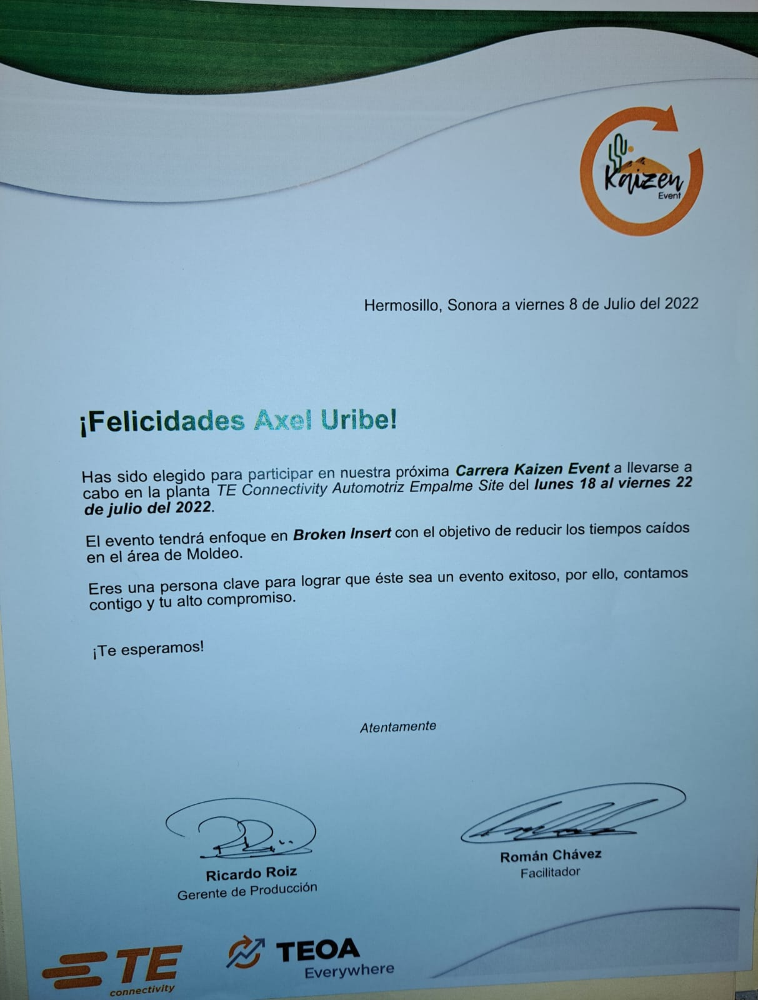
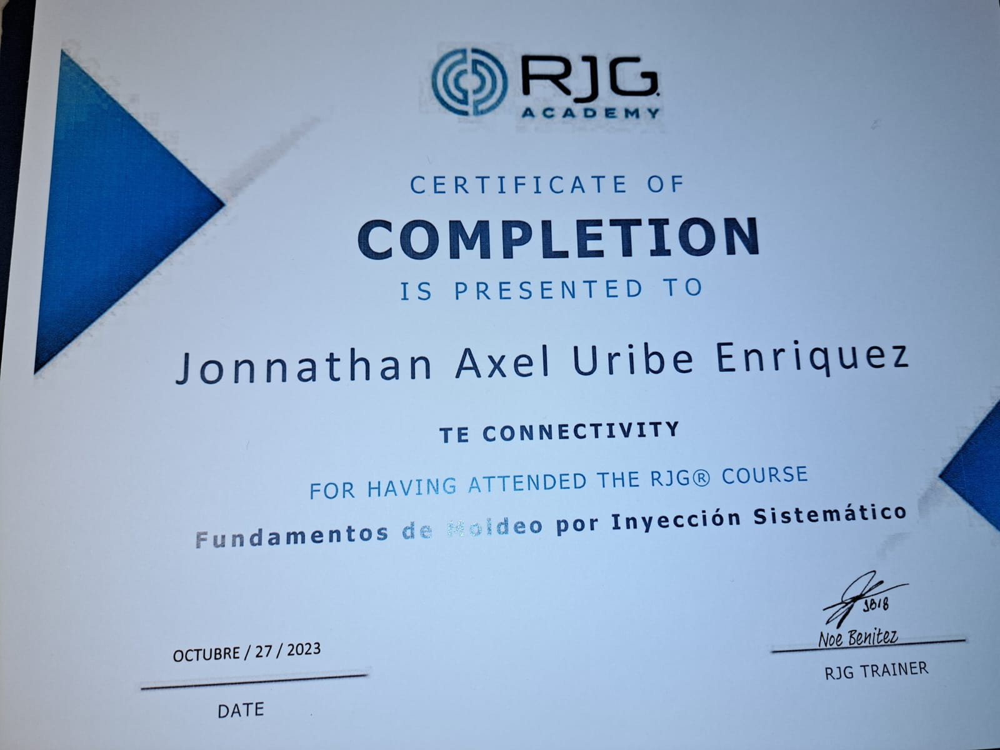
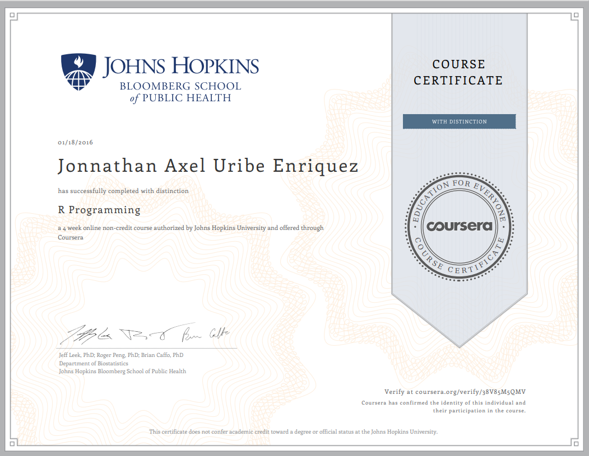
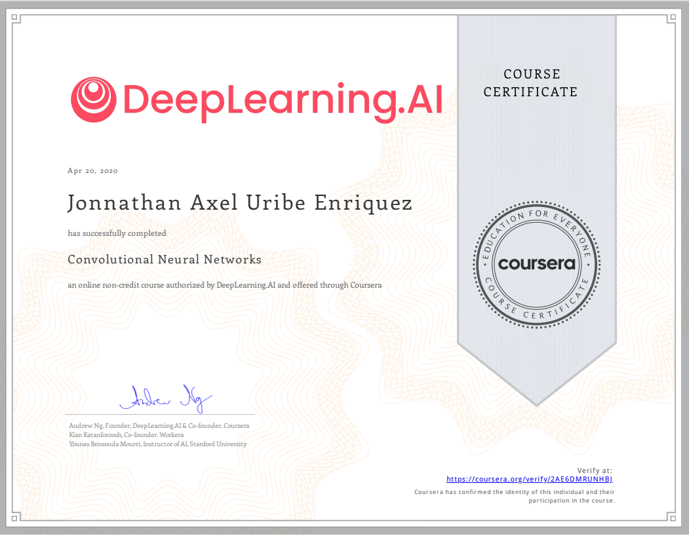
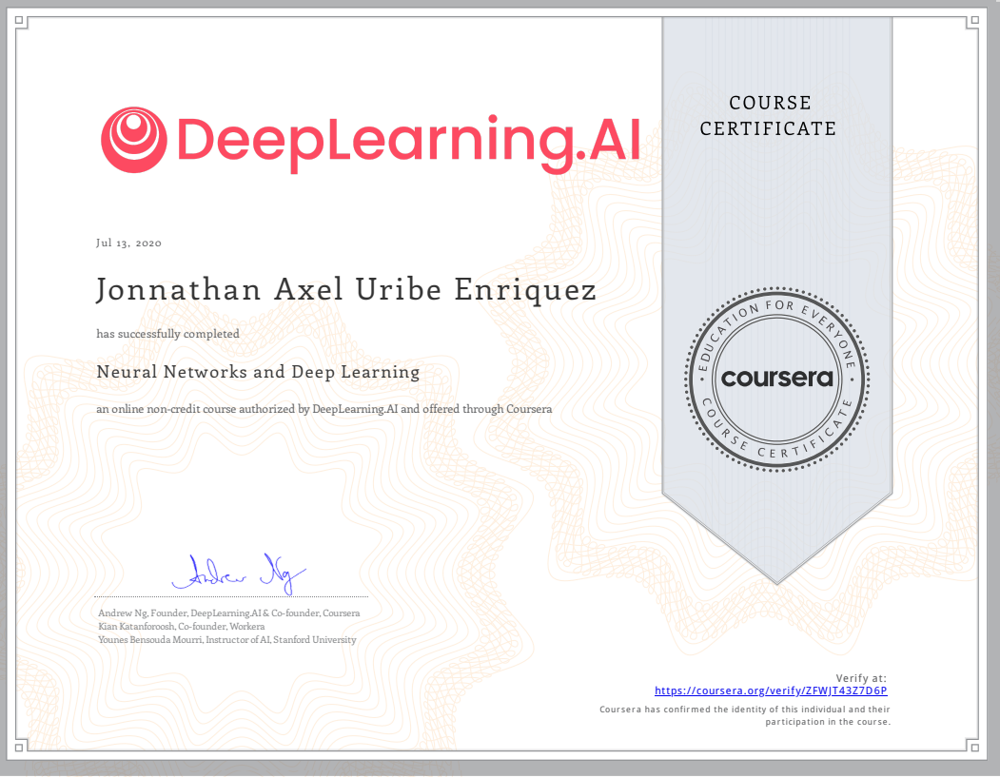
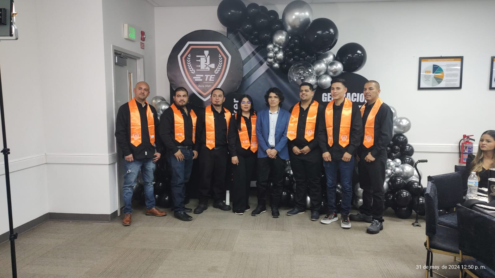

Reconocimientos
Durante en mi estancia en instituciones y empleos he tenido la oportunidad de recibir reconocimientos por mi desempeño. Desafortunadamente, hasta hace poco me di a la tarea de conservarlos como pequeños logros/incentivos.
30 Semana nacional de investigación y docencia en matemáticas
La Semana nacional de investigación y docencia en matemáticases el evento académico más importante en el noroeste del país en cuanto a investigación y divulgación en el área de las matemáticas, y el segundo en importancia a nivel nacional, sólo después del Congreso Nacional de la Sociedad Matemática Mexicana.
Participación
- Ponencia de trabajo de investigacion "Ciencia de datos en la dark web"
Abstract
La habilidad de los usuarios en la red durante la última década no solamente ha trasladado el mundo de la compraventa de bienes a internet, también se ha encargado de proyectar aquellas transacciones que se llevan a cabo en el mercado negro, asistiéndose principalmente en el desarrollo de la dark web. Hasta hace poco tiempo, resultaba particularmente difícil comprender el comportamiento de los usuarios en la dark web debido a que tiene como premisa el anonimato y se requiere software especial para la interacción. Gracias al desarrollo de métodos y herramientas de recopilación de datos, ahora es posible utilizar técnicas de diferentes áreas de ciencias de la computación y matemáticas para explicar la tendencia de las transacciones y el comportamiento de los usuarios en la red oscura.
Referencia
Enlace a la página web del evento: https://semana.mat.uson.mx/semanaxxx/

Te Connectivity
Por la implementación de ideas /mejoras en el área de moldeo (mejoras en moldes de inyección de plástico)Las 500 de Hermosillo es un evento creado internamente en el que varios equipos deben aportar mejoras que impacten en
los métricos establecidos por la planta: calidad, ahorro, entregas a tiempo, etc. La dinámica consiste en evaluación del impacto,
realizada por el equipo de ingeniería, una vez evaluada la idea se procede a la implementación.
Las mejoras realizadas están orientadas principalmente a evitar que se armen de manera incorrecta moldes (método poka-yoke ),
armar mal un molde implica gastos significantes, ya que cuando tratan de producir, los componentes colisionan (se rompen)
como resultado es necesario reemplazar los componentes por nuevos o fabricarlos, en cualquiera de los casos se pierde tiempo valioso
para el cliente. Al igual para aquellos casos en los que no colisionan, pero están armados de manera incorrecta y causan scrap en producción y quejas de cliente.

Te Connectivity (Kaizen)
El kaizen que tuvo como nombre "broken insert" fue un evento en el que se creó un grupo multidisciplinario con la finalidad de realizar un análisis robusto y
solucionar las fallas recurrentes de un conjunto de moldes.
El evento brinda una perspectiva bastante nutrida, en el que se aprecian las diferentes perspectivas de las diversas áreas sobre un mismo problema.
Fue una experiencia bastante enriquecedora.

Moldeo sistematico
Un gran curso introductorio para cualquier persona que desee desarrollar un enfoque de moldeo sistemático
desde el punto de vista del plástico; no desde el tradicional punto de vista de la máquina. enfocado a comprender
mejor cómo desarrollar un proceso independiente de la máquina, cómo introducir mejoras basadas en los datos a los procesos existentes,
y cómo detectar y corregir problemas de manera efectiva usando enfoques científicos y sistemáticos.
también las relaciones causa-efecto entre la máquina, el proceso, el molde y el material.
Asimismo, cómo y por qué se ve afectado el comportamiento de los polímeros.
Esto ayuda a tomar decisiones informadas para lograr soluciones duraderas, no simples “parches” para el proceso.

Coursera
Coursera es una plataforma global de aprendizaje que ofrece cursos de diferentes áreas correspondientes a las universidades más importantes.
- Curso: "The data scientist toolbox" (Análisis de datos) Enlace al certificado oficial: https://coursera.org/share/f37c0324238ea4926a417b97dcb64d2b
- Curso: "Sequence Models" (Procesamiento del lenguaje natural mediante redes neuronales) Enlace al certificado oficial: https://coursera.org/share/871790acd412e1f264d943d61d77b13d
- Curso: "R programming" (Análisis de datos) Enlace al certificado oficial: https://coursera.org/share/0905b60185ca77ae46c87566cf40fafa
- Curso: "Convolutional neural networks" (Redes neuronales para el tratamiento de imagenes) Enlace al certificado oficial: https://coursera.org/share/c8a99ff6f577d34fd3516dad40e2c690
- Curso: "Neural networks and deep learning" (Redes neuronales/aprendizaje profundo) Enlace al certificado oficial: https://coursera.org/share/3de65404a788978506fb458b29b35232




Academia de moldeo
Como formador en la Academia de Moldeo, tuve el privilegio de acompañar el crecimiento de la segunda generación de futuros profesionales del sector. Al culminar sus estudios, no solo consolidaron las habilidades técnicas necesarias, sino también el sentido de responsabilidad, disciplina y creatividad que los impulsa a destacar en la industria. Este logro reafirma mi compromiso con la excelencia educativa y el impulso al talento emergente.
- © Untitled. All rights reserved.
- Design: HTML5 UP